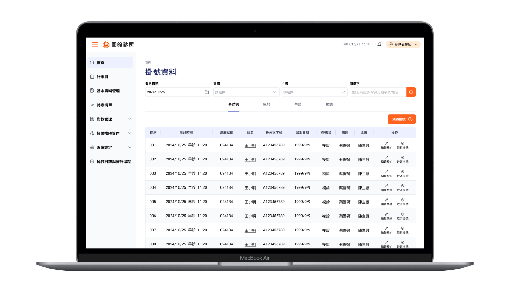
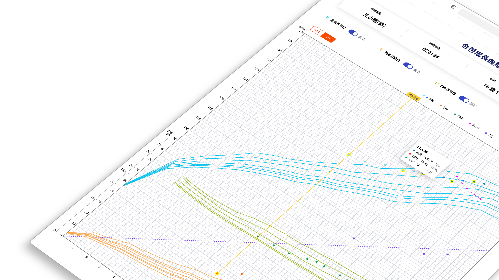
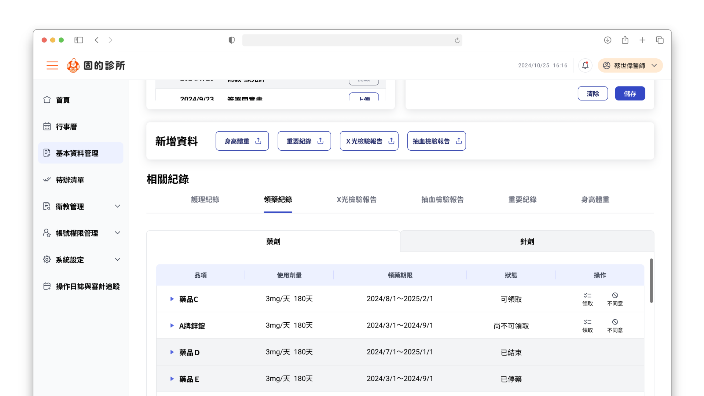
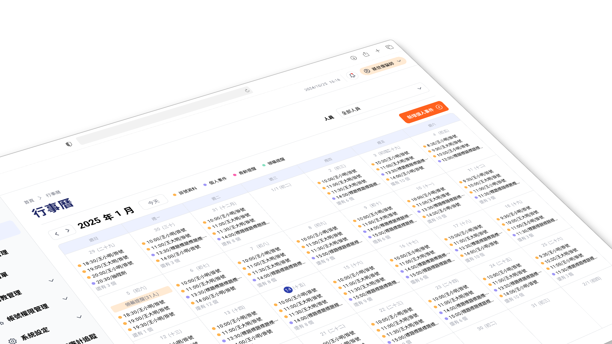
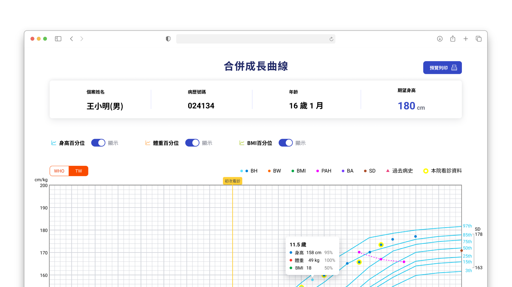
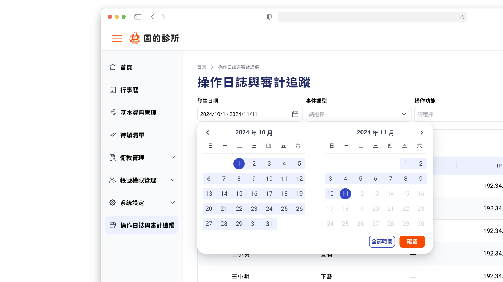
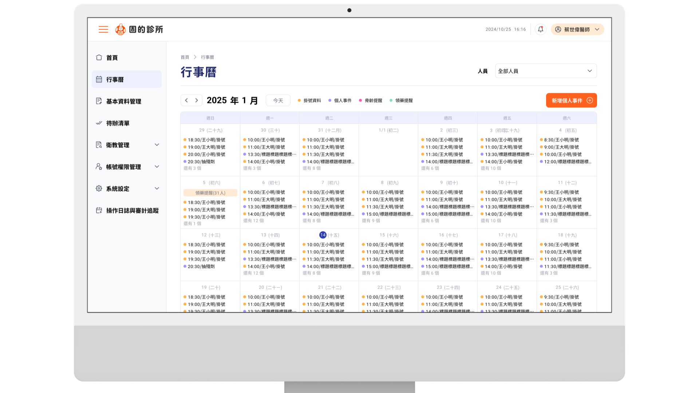

次世代兒童成長骨科
醫療資訊系統 HIS / EHR
全面數位化傳統繁複的紙本醫療流程，結合高精度數據圖表與智慧協作防錯機制，打造端到端臨床流暢操作體驗。

本專案協助一間專精於兒童成長與骨科領域的專業診所進行全面的「數位轉型」。診所過去從掛號、病歷登錄、看診診斷、護理紀錄到藥劑調配皆高度依賴紙本作業，資訊極其零散且難以追蹤患者長期的成長曲線。系統從患者與診所的「第一個接觸點」出發，無縫串聯掛號、看診、護理、藥劑與後續骨齡追蹤，建構一套完整的端到端醫療智慧協作平台。
老舊紙本心智模型的數位跨越，
與醫療防錯零容忍的設計賽局。
高難度的數位認知落差
第一線醫生與護理師長期習慣紙本作業，對軟體介面的抽象邏輯存在極高抗拒，流程與操作上需要反覆溝通。UI 必須在不破壞臨床習慣的前提下，大幅降低數位認知負荷。
多維醫療圖表的工程落地限制
兒童成長曲線需要將個案的身高、體重、BMI 同時與 WHO 及台灣本土常模等多維度複雜數據進行交叉對比。如何兼顧醫生的判讀直覺，並克服前端工程端在大數據動態渲染上的極限，是一大挑戰。
高壓環境下的任務重複與遺漏
護理師在排班、任務指派、衛教與領藥確認等現場高強度工作中，傳統紙本極易造成遺漏或重複處理。系統亟需一套嚴密的智慧判斷與狀態防呆機制。
關鍵決策與思考。

低風險的「前置原型演練」，以高擬真 UI 收攏醫護操作邏輯
為了避免進入程式開發後才發現系統不符合臨床直覺的巨大重工成本，我在前期深入調研醫護紙本習慣後，直接產出高擬真（High-Fi）流程畫面（如首頁掛號資料面板）。透過視覺化的排版與動線示範，讓習慣紙本的醫生能直接在畫面上確認「今日看診時段」、「看診狀態」與快捷操作（編輯預約 / 取消掛號），在完全不驚動後端工程的前提下快速凝聚共識。

高密度多維數據可視化：成長曲線的降噪與高頻互動設計
針對最核心的「合併成長曲線」面板，我與工程端進行了多次高成本的互動技術探討。為了讓醫生在看診情境下能秒級對比，我重塑了圖表層級：利用清晰的色彩編碼（Color-Coding）與開關（Toggle）切換多種百分位數，並設計了「浮動十字智慧 Tooltip 提示卡」，既符合醫學判讀直覺，又完美解決了工程端高頻渲染的效能瓶頸。

一屏化（One-Screen）個案詳情佈局與高視覺對比狀態標籤
個案詳情頁面是醫護人員停留最久的畫面。我採用嚴謹的網格系統（Grid System）進行「一屏化」資訊分流：頂部與左側固定展示患者核心基本資料與待辦事項；下方則透過靈活的 Tab 結構切換護理、領藥與 X 光報告。在領藥紀錄中，為「可領取、尚不可領取、已結束、停藥、不同意使用」規劃了語意清晰、對比分明的狀態元件（States），徹底解決護理師現場核對藥劑的焦慮，確保醫療安全。

雙軌防呆機制：排程行事曆與狀態鎖定待辦清單
面對護理工作容易遺漏與重複指派的痛點，我整合了「待辦清單」與「多功能行事曆」。待辦清單中採用高對比度的行動按鈕（新增 / 開啟 / 選擇），清晰區分任務處理階段；行事曆則引入元件化的色彩標誌（Coded Badges），將掛號資料、個人事件、骨齡提醒、領藥提醒進行視覺降噪與分類。護理人員與醫師能跨角色即時協作，透過介面制約，達到「零遺漏、零重複」的防呆最高標準。
核心畫面。

合併成長曲線數據面板。透過精細的背景格線與高對比的互動浮動提示，協助醫生在數秒內精準判讀個案的發育進度。

操作日誌與審計追蹤。完整記錄系統操作軌跡，並提供精確的日期區間篩選，滿足醫療場域對資料可追溯性與稽核的高標準要求。
患者個案全局面板。將複雜的護理紀錄、待辦清單與多顆藥品狀態完美收納，具備極佳的資訊層級結構。

跨角色智慧行事曆。以色彩圓點組件化管理多重提醒，有效避免診所內部溝通落差與任務遺漏。
我學到
了什麼。
面對對數位化相對保守、工作高壓的醫療利害關係人，此專案成功的關鍵在於「用 UI 視覺轉譯邏輯」。透過前期高擬真的 Figma 原型進行臨床模擬講解，我在完全不增加後端研發負擔的前提下，收攏了繁複的商業邏輯，為團隊省下了後期可能面臨的大量重工（Rework）成本。UI 原型在這個專案裡不只是溝通工具，而是降低工程風險的前置手段。
醫療系統設計的核心矛盾是資訊密度與認知負荷——兩者此消彼長，無法同時最大化。在成長曲線與用藥紀錄的設計中，我透過視覺編碼（Color-Coding）、網格系統與一屏化佈局，將紙本的混亂資訊整理成直覺且容錯率高的數位介面。
面對高壓醫療環境，我從端到端全局體驗出發——在醫生的專業堅持與工程師的技術限制之間，用 UI 規範與設計邏輯擔任翻譯角色。能從端到端梳理 B2B 商務邏輯、同時守住視覺品質，這是我在複雜系統設計上的核心能力。